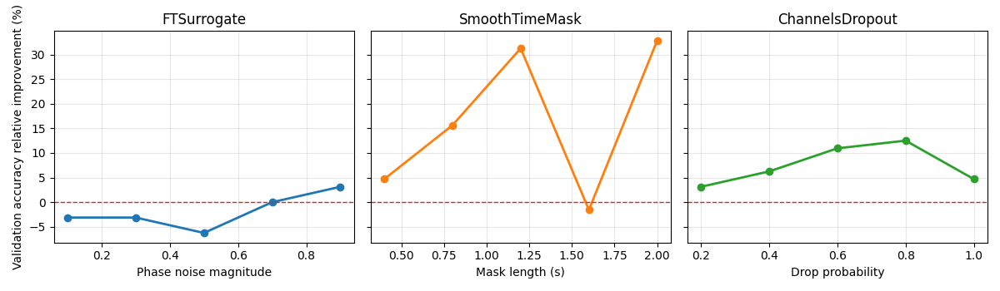

Note
Go to the end to download the full example code.
Searching the best data augmentation on BCIC IV 2a Dataset#
This tutorial shows how to search data augmentations using braindecode. Indeed, it is known that the best augmentation to use often dependent on the task or phenomenon studied. Here we follow the methodology proposed in [1] on the openly available BCI IV 2a Dataset.
Data augmentation and self-supervised learning approaches demand an intense comparison to find the best fit with the data. This view is demonstrated in [1] and shows the importance of selecting the right transformation and strength for different type of task considered. Here, we use the augmentation module present in braindecode in the context of trialwise decoding with the BCI IV 2a dataset.
# Authors: Bruno Aristimunha <a.bruno@ufabc.edu.br>
# Cédric Rommel <cedric.rommel@inria.fr>
# License: BSD (3-clause)
import json
from pathlib import Path
from joblib import parallel_backend
Loading and preprocessing the dataset#
Loading#
First, we load the data. In this tutorial, we use the functionality of braindecode to load BCI IV competition dataset 1. The dataset is available on the BNCI website. There is 9 subjects recorded with 22 electrodes while doing a motor imagery task, with 144 trials per class. We will load this dataset through the MOABB library.
from skorch.callbacks import EarlyStopping, LRScheduler
from skorch.dataset import ValidSplit
from braindecode import EEGClassifier
from braindecode.datasets import MOABBDataset
subject_id = 3
dataset = MOABBDataset(dataset_name="BNCI2014_001", subject_ids=[subject_id])
Preprocessing#
We apply a bandpass filter, from 4 to 38 Hz to focus motor imagery-related brain activity
from numpy import multiply
from braindecode.preprocessing import (
Preprocessor,
exponential_moving_standardize,
preprocess,
)
low_cut_hz = 4.0 # low cut frequency for filtering
high_cut_hz = 38.0 # high cut frequency for filtering
# Parameters for exponential moving standardization
factor_new = 1e-3
init_block_size = 1000
# Factor to convert from V to uV
factor = 1e6
In time series targets setup, targets variables are stored in mne.Raw object as channels of type misc. Thus those channels have to be selected for further processing. However, many mne functions ignore misc channels and perform operations only on data channels (see MNE’s glossary on data channels).
preprocessors = [
Preprocessor("pick_types", eeg=True, meg=False, stim=False), # Keep EEG sensors
Preprocessor(lambda data: multiply(data, factor)), # Convert from V to uV
Preprocessor("filter", l_freq=low_cut_hz, h_freq=high_cut_hz), # Bandpass filter
Preprocessor(
exponential_moving_standardize, # Exponential moving standardization
factor_new=factor_new,
init_block_size=init_block_size,
),
]
preprocess(dataset, preprocessors, n_jobs=-1)
Extracting windows#
Now we cut out compute windows, the inputs for the deep networks during training. We use the braindecode function for this, provinding parameters to define how trials should be used.
from numpy import array
from skorch.helper import SliceDataset
from braindecode.preprocessing import create_windows_from_events
trial_start_offset_seconds = -0.5
# Extract sampling frequency, check that they are same in all datasets
sfreq = dataset.datasets[0].raw.info["sfreq"]
assert all([ds.raw.info["sfreq"] == sfreq for ds in dataset.datasets])
# Calculate the trial start offset in samples.
trial_start_offset_samples = int(trial_start_offset_seconds * sfreq)
windows_dataset = create_windows_from_events(
dataset,
trial_start_offset_samples=trial_start_offset_samples,
trial_stop_offset_samples=0,
preload=True,
)
Split dataset into train and valid#
Following the split defined in the BCI competition
Defining a list of transforms#
In this tutorial, we will use three categories of augmentations. This categorization has been proposed by [1] to explain and aggregate the several possibilities of augmentations in EEG, being them:
Frequency domain augmentations,
Time domain augmentations,
Spatial domain augmentations.
From this same paper, we selected the best augmentations in each type:
FTSurrogate, SmoothTimeMask, ChannelsDropout. We also keep
IdentityTransform as an explicit baseline so the search can report the
relative improvement of each augmentation strength over no augmentation.
For each augmentation, we evaluate five strengths over one key parameter:
the phase noise magnitude for FTSurrogate, the mask length for
SmoothTimeMask, and the drop probability for ChannelsDropout.
import pandas as pd
from braindecode.augmentation import (
ChannelsDropout,
FTSurrogate,
IdentityTransform,
SmoothTimeMask,
)
seed = 20200220
def _make_search_candidate(
transform,
*,
augmentation,
magnitude,
display_magnitude,
axis_label,
candidate_label,
sort_order,
):
transform._tutorial_candidate_label = candidate_label
transform._tutorial_augmentation = augmentation
transform._tutorial_magnitude = magnitude
transform._tutorial_display_magnitude = display_magnitude
transform._tutorial_axis_label = axis_label
transform._tutorial_sort_order = sort_order
return transform
def _augmentation_search_candidates(sfreq, seed):
candidates = [
_make_search_candidate(
IdentityTransform(),
augmentation="IdentityTransform",
magnitude=0.0,
display_magnitude=0.0,
axis_label="Identity baseline",
candidate_label="IdentityTransform()",
sort_order=0,
)
]
for phase_noise in (0.1, 0.3, 0.5, 0.7, 0.9):
candidates.append(
_make_search_candidate(
FTSurrogate(
probability=0.5,
phase_noise_magnitude=phase_noise,
random_state=seed,
),
augmentation="FTSurrogate",
magnitude=phase_noise,
display_magnitude=phase_noise,
axis_label="Phase noise magnitude",
candidate_label=f"FTSurrogate(phase_noise_magnitude={phase_noise:.1f})",
sort_order=1,
)
)
for mask_len_samples in (100, 200, 300, 400, 500):
candidates.append(
_make_search_candidate(
SmoothTimeMask(
probability=0.5,
mask_len_samples=mask_len_samples,
random_state=seed,
),
augmentation="SmoothTimeMask",
magnitude=mask_len_samples,
display_magnitude=mask_len_samples / sfreq,
axis_label="Mask length (s)",
candidate_label=f"SmoothTimeMask(mask_len_samples={mask_len_samples})",
sort_order=2,
)
)
for p_drop in (0.2, 0.4, 0.6, 0.8, 1.0):
candidates.append(
_make_search_candidate(
ChannelsDropout(probability=0.5, p_drop=p_drop, random_state=seed),
augmentation="ChannelsDropout",
magnitude=p_drop,
display_magnitude=p_drop,
axis_label="Drop probability",
candidate_label=f"ChannelsDropout(p_drop={p_drop:.1f})",
sort_order=3,
)
)
return candidates
def _search_results_table(cv_results):
rows = []
for index, params in enumerate(cv_results["params"]):
transform = params["iterator_train__transforms"]
rows.append(
{
"candidate_label": transform._tutorial_candidate_label,
"augmentation": transform._tutorial_augmentation,
"magnitude": transform._tutorial_magnitude,
"display_magnitude": transform._tutorial_display_magnitude,
"axis_label": transform._tutorial_axis_label,
"sort_order": transform._tutorial_sort_order,
"mean_training_accuracy": float(cv_results["mean_train_score"][index]),
"std_training_accuracy": float(cv_results["std_train_score"][index]),
"mean_validation_accuracy": float(cv_results["mean_test_score"][index]),
"std_validation_accuracy": float(cv_results["std_test_score"][index]),
"rank_validation_accuracy": int(cv_results["rank_test_score"][index]),
}
)
search_results = pd.DataFrame(rows).sort_values(["sort_order", "display_magnitude"])
identity_validation_score = float(
search_results.loc[
search_results["augmentation"] == "IdentityTransform",
"mean_validation_accuracy",
].iloc[0]
)
identity_training_score = float(
search_results.loc[
search_results["augmentation"] == "IdentityTransform",
"mean_training_accuracy",
].iloc[0]
)
search_results["relative_validation_improvement"] = (
search_results["mean_validation_accuracy"] / identity_validation_score - 1
)
search_results["relative_training_improvement"] = (
search_results["mean_training_accuracy"] / identity_training_score - 1
)
search_results["relative_validation_improvement_pct"] = (
search_results["relative_validation_improvement"] * 100
)
search_results["relative_training_improvement_pct"] = (
search_results["relative_training_improvement"] * 100
)
return search_results.reset_index(drop=True)
search_candidates = _augmentation_search_candidates(sfreq, seed)
Training a model with data augmentation#
Now that we know how to instantiate three list of Transforms, it is time to learn how
to use them to train a model and try to search the best for the dataset.
Let’s first create a model for search a parameter.
Create model#
The model to be trained is defined as usual.
import torch
from braindecode.models import ShallowFBCSPNet
from braindecode.util import set_random_seeds
cuda = torch.cuda.is_available() # check if GPU is available, if True chooses to use it
device = "cuda" if cuda else "cpu"
if cuda:
torch.backends.cudnn.benchmark = True
Set random seed to be able to roughly reproduce results
Note that with cudnn benchmark set to True, GPU indeterminism
may still make results substantially different between runs.
To obtain more consistent results at the cost of increased computation time,
you can set cudnn_benchmark=False in set_random_seeds
or remove torch.backends.cudnn.benchmark = True
seed = 20200220
set_random_seeds(seed=seed, cuda=cuda)
n_classes = 4
classes = list(range(n_classes))
# Extract number of chans and time steps from dataset
n_channels = train_set[0][0].shape[0]
n_times = train_set[0][0].shape[1]
model = ShallowFBCSPNet(
n_chans=n_channels,
n_outputs=n_classes,
n_times=n_times,
final_conv_length="auto",
)
Create an EEGClassifier with the desired augmentation#
In order to train with data augmentation, a custom data loader can be
for the training. Multiple transforms can be passed to it and will be applied
sequentially to the batched data within the AugmentedDataLoader object.
from braindecode.augmentation import AugmentedDataLoader
# Send model to GPU
if cuda:
model.cuda()
The model is now trained as in the trial-wise example. The
AugmentedDataLoader is used as the train iterator and the list of
transforms are passed as arguments.
lr = 0.0625 * 0.01
weight_decay = 0
batch_size = 64
n_epochs = 2
clf = EEGClassifier(
model,
iterator_train=AugmentedDataLoader, # This tells EEGClassifier to use a custom DataLoader
iterator_train__transforms=[IdentityTransform()],
criterion=torch.nn.CrossEntropyLoss,
optimizer=torch.optim.AdamW,
train_split=ValidSplit(0.2, stratified=True, random_state=seed),
optimizer__lr=lr,
optimizer__weight_decay=weight_decay,
batch_size=batch_size,
callbacks=[
"accuracy",
("lr_scheduler", LRScheduler("CosineAnnealingLR", T_max=max(1, n_epochs - 1))),
("early_stopping", EarlyStopping(patience=2, load_best=True)),
],
device=device,
classes=classes,
)
To use the skorch framework, it is necessary to transform the windows dataset using the module SliceData. Also, it is mandatory to eval the generator of the training.
train_X = SliceDataset(train_set, idx=0)
train_y = array(list(SliceDataset(train_set, idx=1)))
Given the trialwise approach, here we use the KFold approach and GridSearchCV.
from sklearn.model_selection import GridSearchCV, KFold
cv = KFold(n_splits=2, shuffle=True, random_state=seed)
fit_params = {"epochs": n_epochs}
param_grid = {
"iterator_train__transforms": search_candidates,
}
clf.verbose = 0
search = GridSearchCV(
estimator=clf,
param_grid=param_grid,
cv=cv,
n_jobs=-1,
return_train_score=True,
scoring="accuracy",
refit=True,
verbose=1,
error_score="raise",
)
repo_id = "braindecode/plot_data_augmentation_search"
artifact_paths = None
try:
from huggingface_hub import hf_hub_download
artifact_paths = {
"search_results.csv": hf_hub_download(repo_id, "search_results.csv"),
"metadata.json": hf_hub_download(repo_id, "metadata.json"),
}
except Exception:
artifact_paths = None
Analysing the best fit#
Next, just perform an analysis of the best fit, and the parameters, remembering the order that was adjusted.
import numpy as np
required_search_columns = {
"candidate_label",
"augmentation",
"display_magnitude",
"axis_label",
"mean_validation_accuracy",
"relative_validation_improvement_pct",
}
required_metadata_keys = {
"best_candidate",
"best_relative_validation_improvement",
"identity_validation_score",
"validation_score",
"training_score",
"eval_accuracy",
}
loaded_search_results = None
metadata = None
if artifact_paths is not None:
loaded_search_results = pd.read_csv(artifact_paths["search_results.csv"])
metadata = json.loads(Path(artifact_paths["metadata.json"]).read_text())
if not required_search_columns.issubset(loaded_search_results.columns) or not (
required_metadata_keys.issubset(metadata)
):
print(
"The published search artifact predates the relative-improvement "
"format, so the short local search was executed locally."
)
loaded_search_results = None
metadata = None
if loaded_search_results is None:
print(
"This tutorial keeps the local augmentation search at 2 epochs per "
"candidate to keep docs builds fast. The published search results "
f"`{repo_id}` were not available, so the short search was executed locally."
)
with parallel_backend("threading", n_jobs=-1):
search.fit(train_X, train_y, **fit_params)
search_results = _search_results_table(search.cv_results_)
best_run = search_results.sort_values(
"mean_validation_accuracy", ascending=False
).iloc[0]
best_aug = best_run["candidate_label"]
validation_score = best_run["mean_validation_accuracy"] * 100
training_score = best_run["mean_training_accuracy"] * 100
relative_improvement = best_run["relative_validation_improvement_pct"]
identity_validation_score = (
search_results.loc[
search_results["augmentation"] == "IdentityTransform",
"mean_validation_accuracy",
].iloc[0]
* 100
)
report_message = (
"The best search candidate saved in `best_aug` reached "
f"{validation_score:.2f}% mean cross-validation accuracy "
f"({relative_improvement:+.2f}% relative to the IdentityTransform "
f"baseline of {identity_validation_score:.2f}%). "
f"Mean train accuracy was {training_score:.2f}%."
)
print(report_message)
eval_X = SliceDataset(eval_set, idx=0)
eval_y = SliceDataset(eval_set, idx=1)
score = search.score(eval_X, eval_y)
print(f"Held-out session accuracy after refit is {score * 100:.2f}%.")
else:
print(
"This tutorial keeps the local augmentation search at 2 epochs per "
"candidate to keep docs builds fast. Loaded saved search results from "
f"`{repo_id}` instead."
)
search_results = loaded_search_results
assert metadata is not None
best_aug = metadata["best_candidate"]
validation_score = metadata["validation_score"] * 100
training_score = metadata["training_score"] * 100
relative_improvement = metadata["best_relative_validation_improvement"] * 100
identity_validation_score = metadata["identity_validation_score"] * 100
report_message = (
"The best offline search candidate saved in `best_aug` reached "
f"{validation_score:.2f}% mean cross-validation accuracy "
f"({relative_improvement:+.2f}% relative to the IdentityTransform "
f"baseline of {identity_validation_score:.2f}%). "
f"Mean train accuracy was {training_score:.2f}%."
)
print(report_message)
score = metadata["eval_accuracy"]
print(f"Held-out session accuracy after refit is {score * 100:.2f}%.")
This tutorial keeps the local augmentation search at 2 epochs per candidate to keep docs builds fast. Loaded saved search results from `braindecode/plot_data_augmentation_search` instead.
The best offline search candidate saved in `best_aug` reached 29.51% mean cross-validation accuracy (+32.81% relative to the IdentityTransform baseline of 22.22%). Mean train accuracy was 48.26%.
Held-out session accuracy after refit is 37.85%.
Plot results#
import matplotlib.pyplot as plt
plot_results = search_results.query("augmentation != 'IdentityTransform'")
augmentations = plot_results["augmentation"].drop_duplicates().tolist()
fig, axes = plt.subplots(1, len(augmentations), sharey=True, figsize=(12, 3.5))
axes = np.atleast_1d(axes)
palette = {
"FTSurrogate": "C0",
"SmoothTimeMask": "C1",
"ChannelsDropout": "C2",
}
for ax, augmentation in zip(axes, augmentations):
augmentation_results = plot_results.loc[
plot_results["augmentation"] == augmentation
].sort_values("display_magnitude")
ax.plot(
augmentation_results["display_magnitude"],
augmentation_results["relative_validation_improvement_pct"],
color=palette.get(augmentation, "C0"),
marker="o",
linewidth=2,
)
ax.axhline(y=0, xmin=0, xmax=1, ls="--", c="tab:red", linewidth=1)
ax.set_title(augmentation)
ax.set_xlabel(augmentation_results["axis_label"].iloc[0])
ax.grid(alpha=0.3)
axes[0].set_ylabel("Validation accuracy relative improvement (%)")
plt.tight_layout()

References#
Total running time of the script: (0 minutes 10.804 seconds)
Estimated memory usage: 852 MB
Run this example